A while ago at work, I was assigned a Lenovo ThinkPad T450. A few months ago, its 128GB SSD running Debian Testing suffered a hardware failure.
Last week, I ordered a 240GB Crucial BX500 SSD. To my surprise, I received a 480GB SanDisk SSD Plus instead—the same drive tier, but offering double the storage capacity.
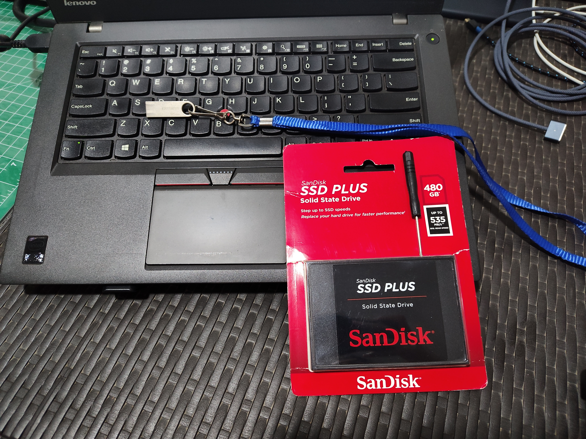
Received a 480GB SanDisk SSD Plus instead of the ordered 240GB drive.
Hardware Failure and Data Recovery Strategy
A few months ago, the SSD on my assigned laptop began showing signs of wear and impending failure. One day, while running Android Studio during an active collaborative project, the system froze and crashed. Subsequent attempts to boot or access the operating system failed completely.
Attempts to reinstall an operating system onto the original drive were unsuccessful. The SSD had locked itself into a permanent read-only state, preventing any new writes or reformatting.
Fortunately, all development projects were properly mirrored in remote Git repositories, and critical local documents were preserved on secondary machines via incremental backups managed with rsync (a tool I will cover in a future publication).
Storage Upgrade and Hardware Maintenance
After several months, I decided to restore the Lenovo ThinkPad T450. I originally planned to acquire a 256GB Samsung 850 Pro. However, due to recent AI industry demand driving up component prices, I opted for a more budget-friendly alternative: a 240GB Crucial BX500. Additionally, I ordered a uni-ball Jetstream Prime Twist pen and a Kuru Toga Metal mechanical pencil (my first mechanical pencil in 17 years).
Upon unboxing, I discovered the vendor had shipped a 480GB SanDisk SSD Plus instead of the 240GB drive.
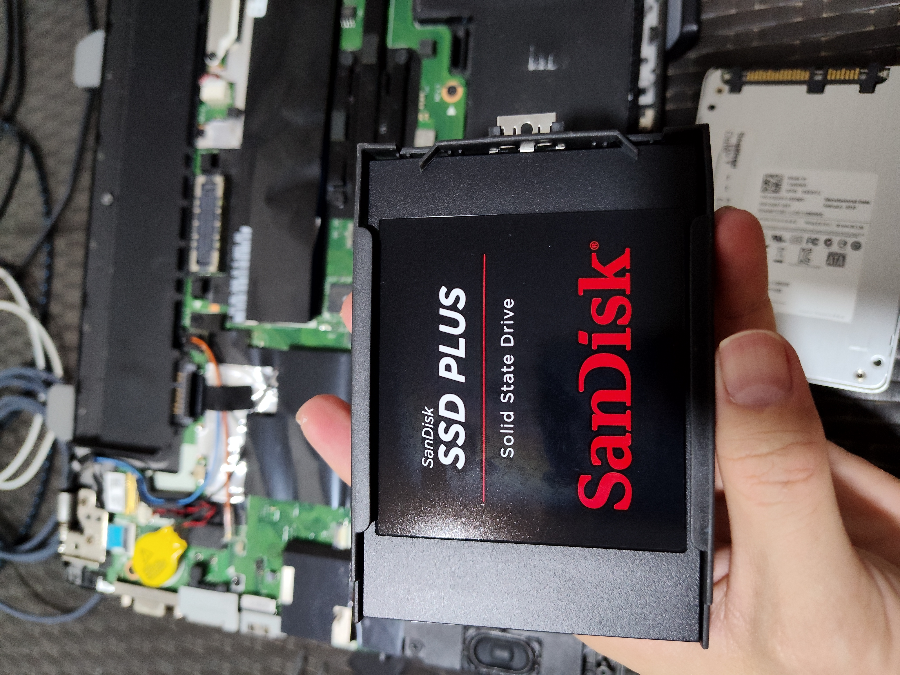
Unboxed it and got it ready for the replacement.
I removed the bottom chassis cover of the T450, extracted the defective SSD, and mounted the new 480GB drive.
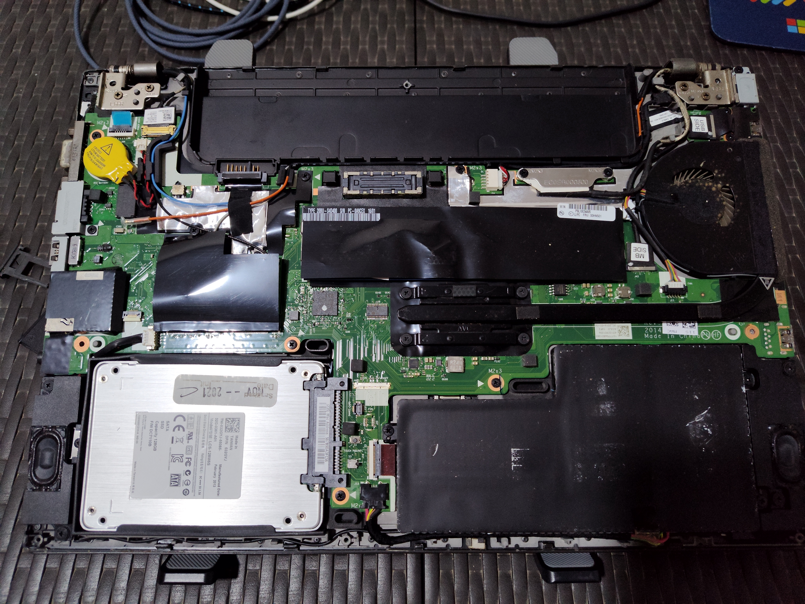
Taylor internals after removing a few screws and snapping off the bottom.
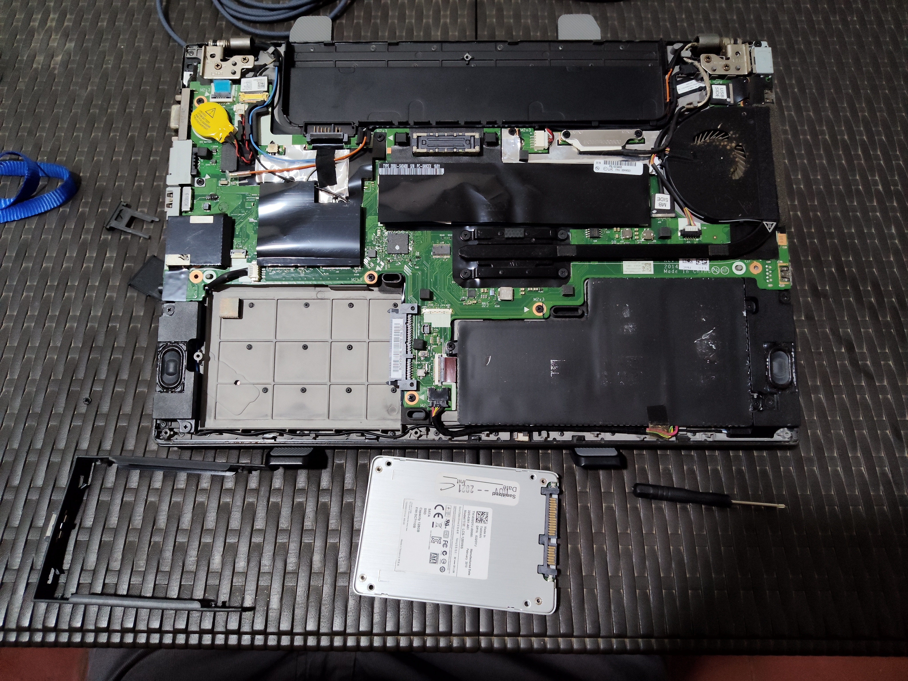
Then removed the old SSD from the enclosure.
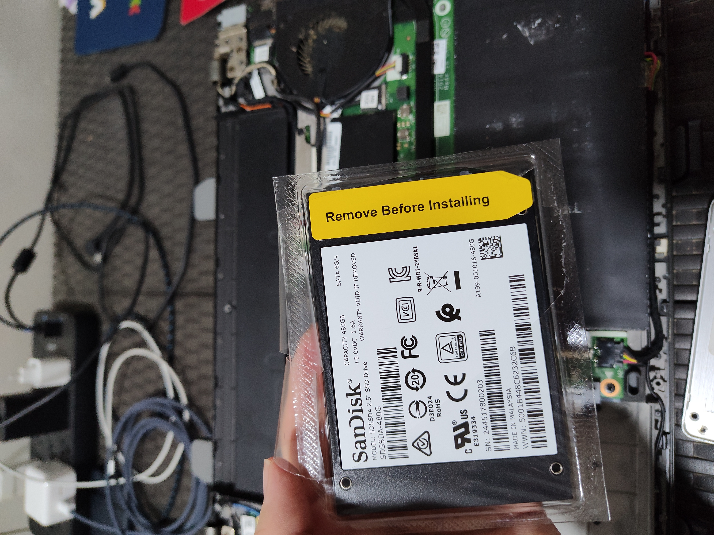
Unboxed the new SSD.
My new SSD.
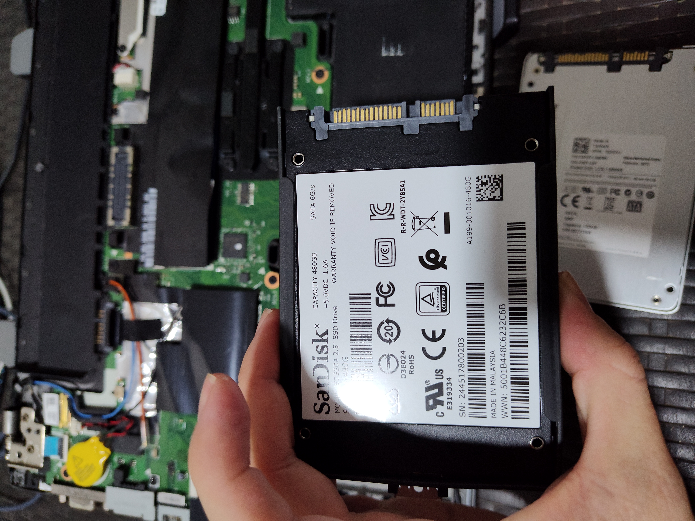
The new SSD is ready to be installed on Taylor.
After reassembling the chassis, I booted into the system BIOS to confirm that the new disk was properly recognized.
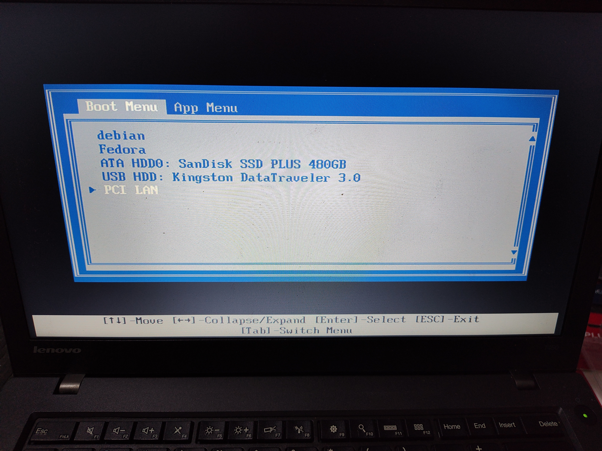
The new SSD is successfully recognized and listed on the boot menu.
Installation via Fedora Everything Netinstall
To maintain a lean, bloat-free system, I created installation media using the Fedora Everything Netinstall ISO (Release 44, x86_64) available from the official Fedora repository:
Unlike the standard Live Workstation media, the Netinstall image allows explicit selection of individual package groups and components. Once options are finalized in the Anaconda installer, all necessary packages are fetched directly from the upstream Fedora mirrors. This ensures that every installed binary is completely up to date from minute one.
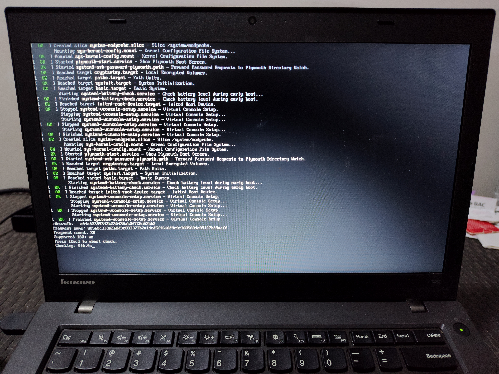
Taylor booting up from the installation media that contains the Fedora Everything Netinstall ISO for release 44, for x86_64 devices.
During the installation I made use of my Motorola ThinkPhone to share its Wi-Fi connection to Taylor via a Wired USB Tethering network:
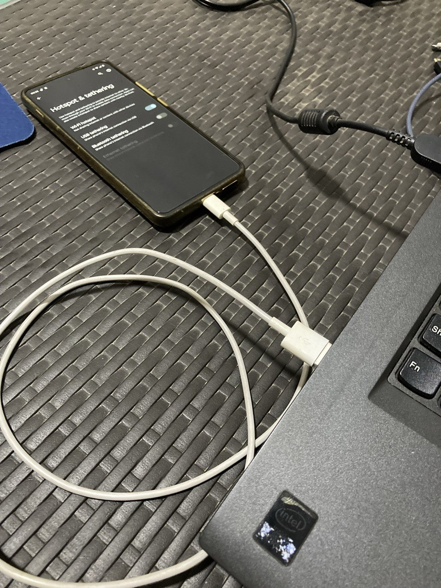
This is a good example of how useful a USB Wired Network can be in some scenarios.
Once download and deployment completed, Anaconda performed a clean reboot into the fresh installation.
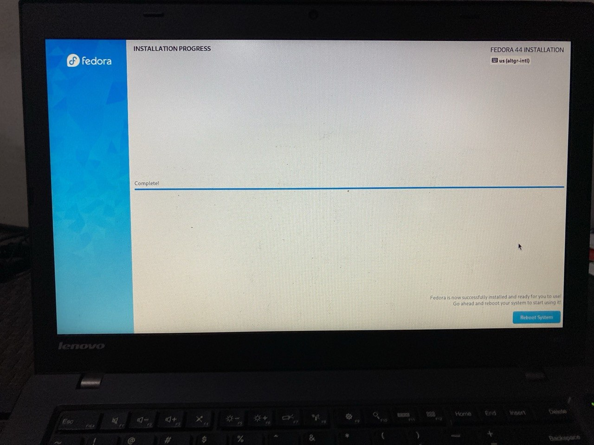
Installation completed and Taylor is ready to reboot.
This is Taylor's GRUB2 menu with the latest Linux kernel available for Fedora Linux 44 already installed:
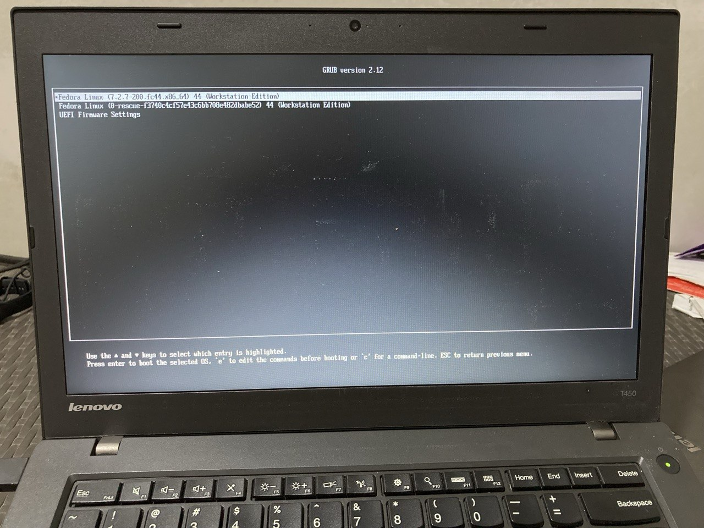
Taylor booting up to Linux 7.2.7-200.
Upon selecting the kernel, I was prompted by the cryptsetup password manager to decrypt the disk:
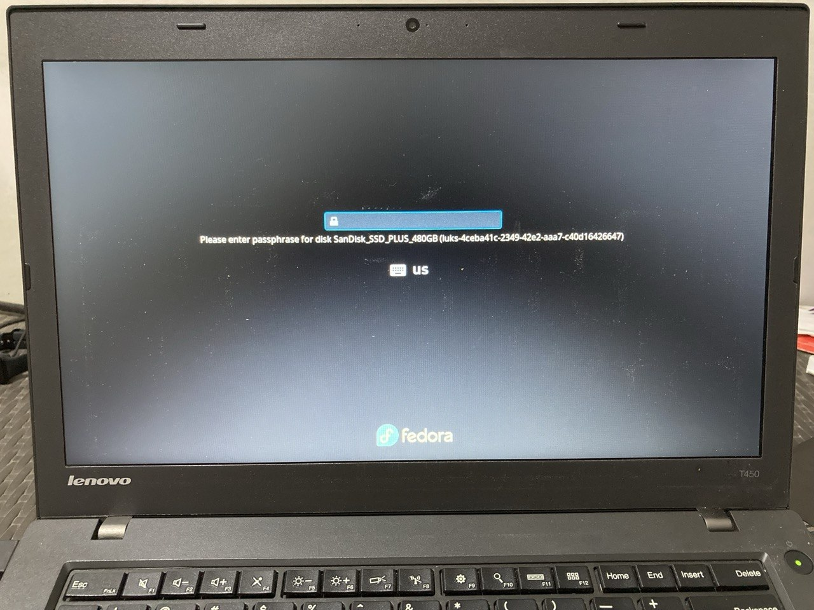
Time to insert the passphrase.
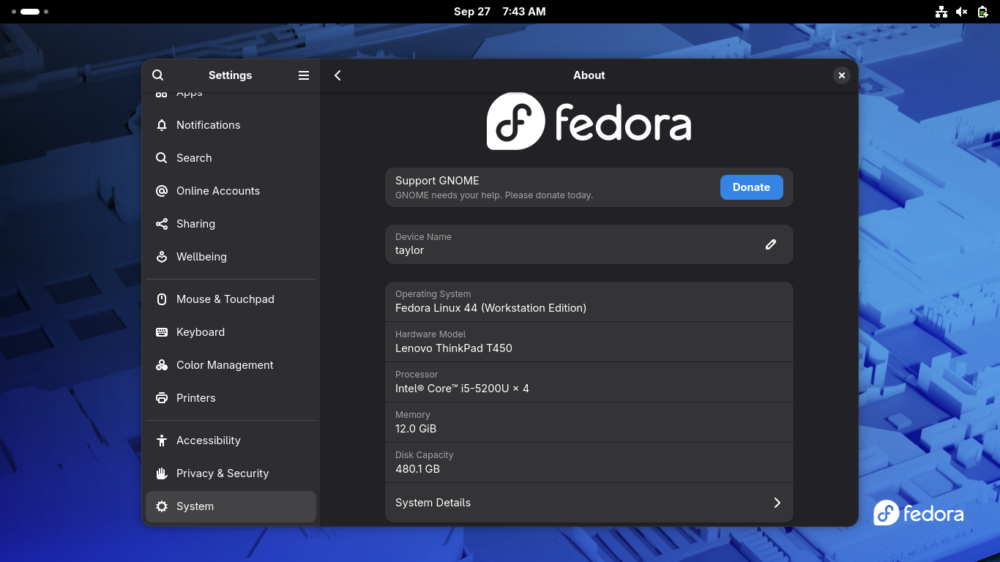
This is Taylor's System Information under Fedora Linux 44 (Workstation Edition) with GNOME Shell as Desktop Environment.
Minimal System Metrics and Metrics Overview
Below is a breakdown of metrics, repository lists, and package selections for this minimal Fedora 44 GNOME Shell Workstation setup:
Installation Date and Time
There are many ways to confirm when the Fedora installation started, when some filesystems or partitions were created, and when the installation process was completed with success.
One possible way is by inspecting the Anaconda Installer Logs. Fedora's installer, Anaconda, copies its logs over to the target system upon a successful installation. You can check the creation (birth) time of the primary installation log or kickstart configuration file:
stat /var/log/anaconda/anaconda.log
Which returns:
porfirio@taylor:~$ stat /var/log/anaconda/anaconda.log
File: /var/log/anaconda/anaconda.log
Size: 120716 Blocks: 240 IO Block: 4096 regular file
Device: 252,1 Inode: 262214 Links: 1
Access: (0600/-rw-------) Uid: ( 0/ root) Gid: ( 0/ root)
Context: system_u:object_r:var_log_t:s0
Access: 2026-10-11 03:57:53.378396125 +0000
Modify: 2026-09-27 07:01:52.682345253 +0000
Change: 2026-09-27 07:01:52.682345253 +0000
Birth: 2026-09-27 07:01:52.681300526 +0000
Or:
sudo ls -l /root/anaconda-ks.cfg
Which returns:
porfirio@taylor:~$ sudo ls -l /root/anaconda-ks.cfg
[sudo] password for porfirio:
-rw-------. 1 root root 1207 Sep 27 07:01 /root/anaconda-ks.cfg
Another way is by checking the Root Filesystem Creation Date. Just like on Debian, the underlying filesystem's birth time can tell you when it was initialized:
Using stat on the root directory:
stat -c %w /
Which returns:
porfirio@taylor:~$ stat -c %w /
2026-09-27 06:47:23.000000000 +0000
It is also possible to use tune2fs (for ext4 filesystems):
sudo tune2fs -l $(df / | tail -1 | awk '{print $1}') | grep 'Filesystem created:'
Which returned:
porfirio@taylor:~$sudo tune2fs -l$(df / | tail -1 | awk '{print $1}') | grep 'Filesystem created:'
[sudo] password for porfirio:
Filesystem created: Sun Sep 27 06:47:23 2026
Number of packages and amount of data downloaded
During the installation Anaconda downloaded 1905 packages, for a total of 2.02 GiB:
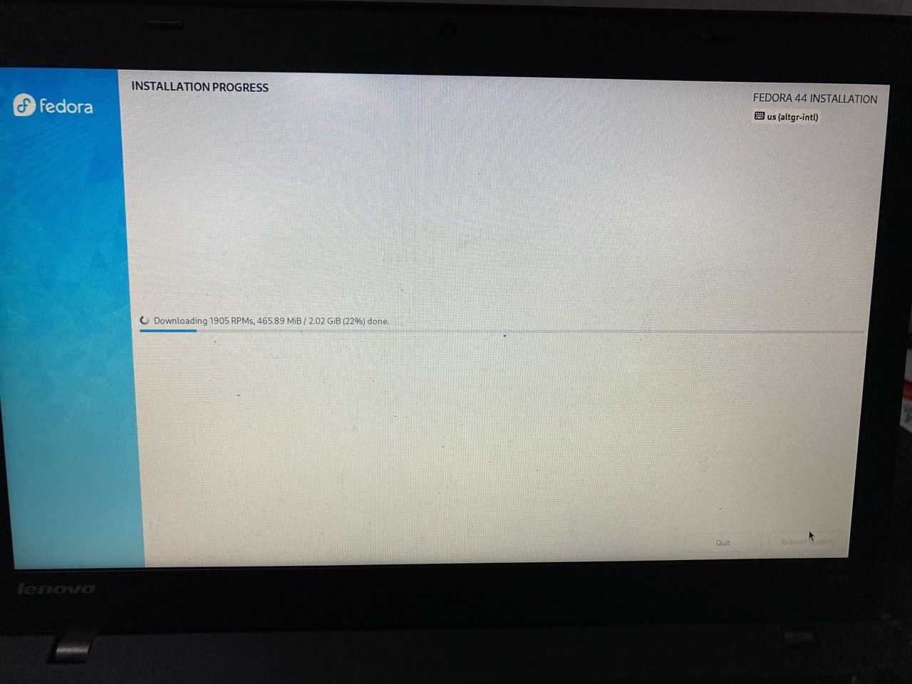
Anaconda getting the 1905 packages that would serve for a Fedora Linux 44 (Workstation Edition).
After the installation got completed this was the total used space for the 1905 packages once installed:
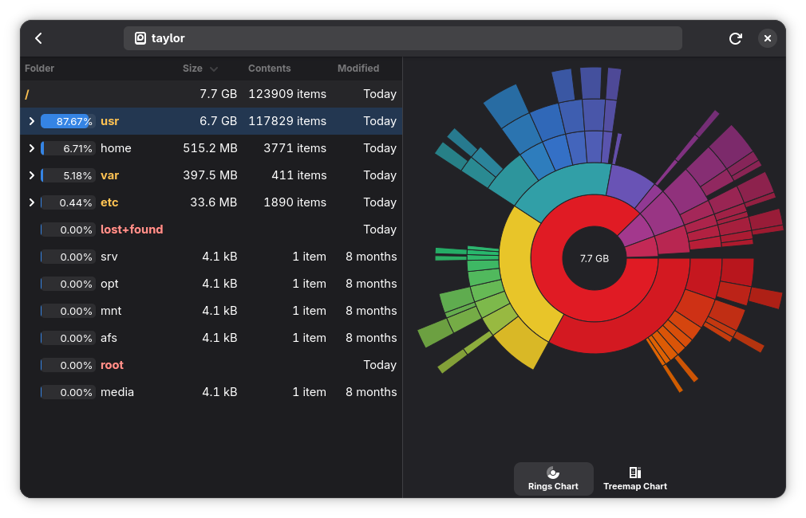
Just 7.7 GB are required to have a fully functional Fedora Linux 44 (Workstation Edition).
This is another way to see how the space is used on the disk by using the command line:
porfirio@taylor:~$ df -h
Filesystem Size Used Avail Use% Mounted on
/dev/mapper/fedora_taylor-root 428G 7.1G 399G 2% /
devtmpfs 5.8G 0 5.8G 0% /dev
tmpfs 5.8G 92K 5.8G 1% /dev/shm
efivarfs 64K 20K 40K 34% /sys/firmware/efi/efivars
tmpfs 2.4G 1.9M 2.4G 1% /run
none 1.0M 0 1.0M 0% /run/credentials/systemd-cryptsetup@luks\x2d4ceba41c\x2d2349\x2d42e2\x2daaa7\x2dc40d16426647.service
none 1.0M 0 1.0M 0% /run/credentials/systemd-journald.service
none 1.0M 0 1.0M 0% /run/credentials/systemd-resolved.service
tmpfs 5.8G 12M 5.8G 1% /tmp
/dev/sda2 9.8G 326M 9.0G 4% /boot
/dev/sda1 2.0G 7.9M 2.0G 1% /boot/efi
tmpfs 1.2G 188K 1.2G 1% /run/user/1000
And this is how the disk's space got distributed with the different partitions:
porfirio@taylor:~$ lsblk
NAME MAJ:MIN RM SIZE RO TYPE MOUNTPOINTS
sda 8:0 0 447.1G 0 disk
├─sda1 8:1 0 2G 0 part /boot/efi
├─sda2 8:2 0 10G 0 part /boot
└─sda3 8:3 0 435.1G 0 part
└─luks-4ceba41c-2349-42e2-aaa7-c40d16426647 252:0 0 435.1G 0 crypt
└─fedora_taylor-root 252:1 0 435.1G 0 lvm /
zram0 251:0 0 8G 0 disk [SWAP]
Enabled Repositories
During the installation I selected the Fedora Workstation Product, which is a set of different Fedora packages groups that guarantee that by the end of the installation process you will have the minimal selection of packages that will provide the Workstation experience intended by the Fedora development team.
porfirio@taylor:~$ sudo dnf group list --installed --hidden
[sudo] password for porfirio:
Updating and loading repositories:
Repositories loaded.
ID Name Installed
base-graphical base-graphical yes
container-management Container Management yes
core Core yes
desktop-accessibility Desktop accessibility yes
firefox Firefox Web Browser yes
fonts Fonts yes
gnome-desktop GNOME yes
guest-desktop-agents Guest Desktop Agents yes
hardware-support Hardware Support yes
libreoffice LibreOffice yes
multimedia Multimedia yes
networkmanager-submodules Common NetworkManager Submodules yes
printing Printing Support yes
workstation-product Fedora Workstation product core yes
Groups: 14 (14 installed, 0 available)
You can use the command below to get to know more about what packages a package group provides:
dnf group info core
I wanted to make sure which software repositories came enabled by default:
porfirio@taylor:~$ sudo dnf repolist --enabled
repo id repo name
fedora Fedora 44 - x86_64
fedora-cisco-openh264 Fedora 44 openh264 (From Cisco) - x86_64
updates Fedora 44 - x86_64 - Updates
This command lists all the repositories configured but disabled on the system:
porfirio@taylor:~$ sudo dnf repolist --disabled
This command lists all the repositories configured on the system:
porfirio@taylor:~$ dnf repolist --all
List of the installed packages
I wanted to get a copy of all the installed packages just for reference. To get the list of the packages installed and the order in which these packages were installed, I used the following command:
porfirio@taylor:~$ sudo dnf history info 1 > dnfHistoryInfo1_cleanInstall.txt
You can find this file on the link below:
Finishing Touches
With the base installation complete, the ThinkPad T450 is fully operational with an up-to-date, non-bloated Linux workstation environment built on top of a reliable upstream system architecture.